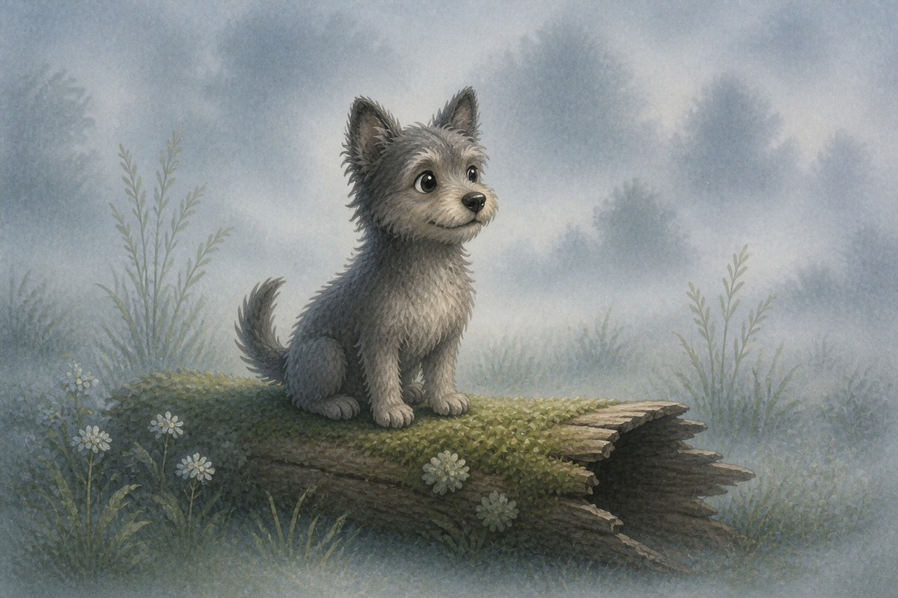
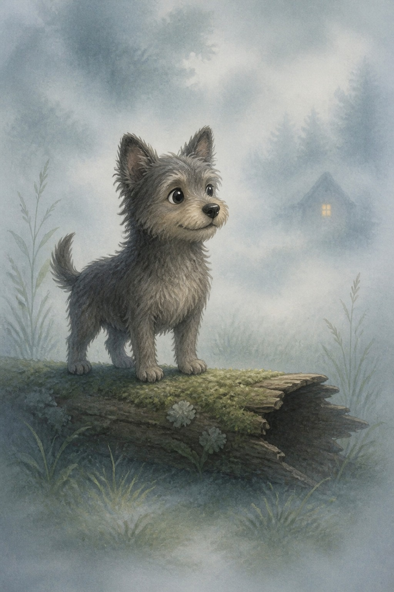
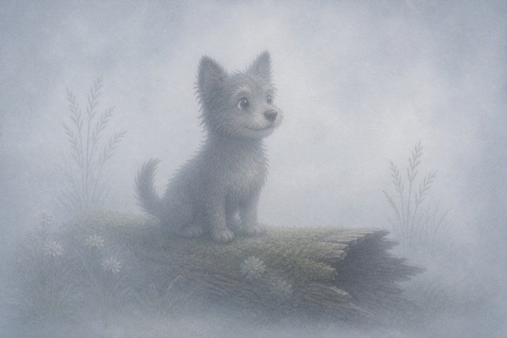
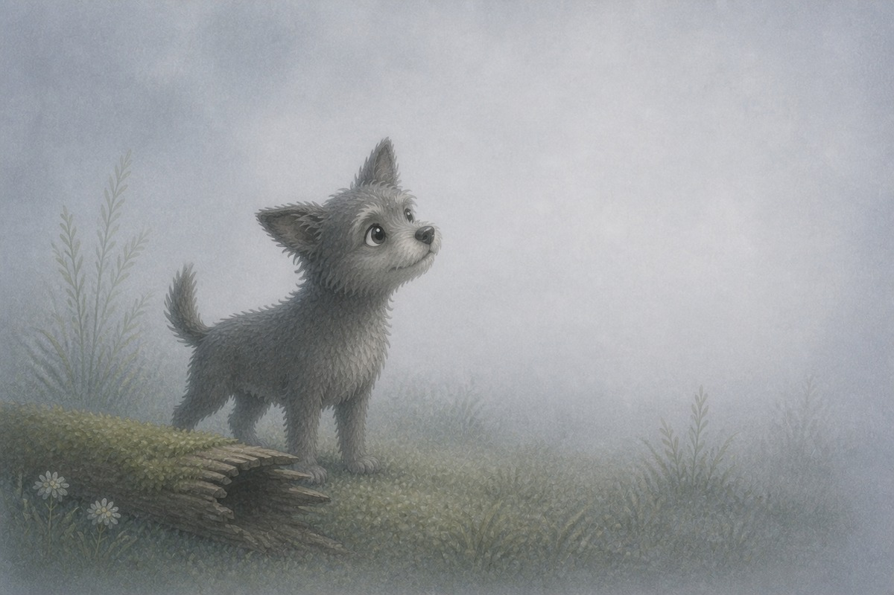
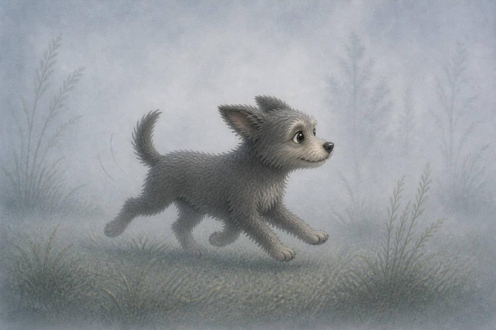
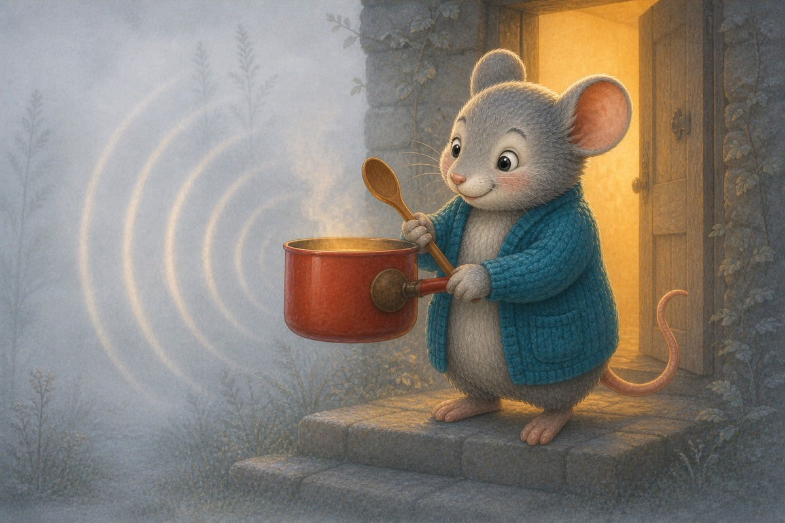
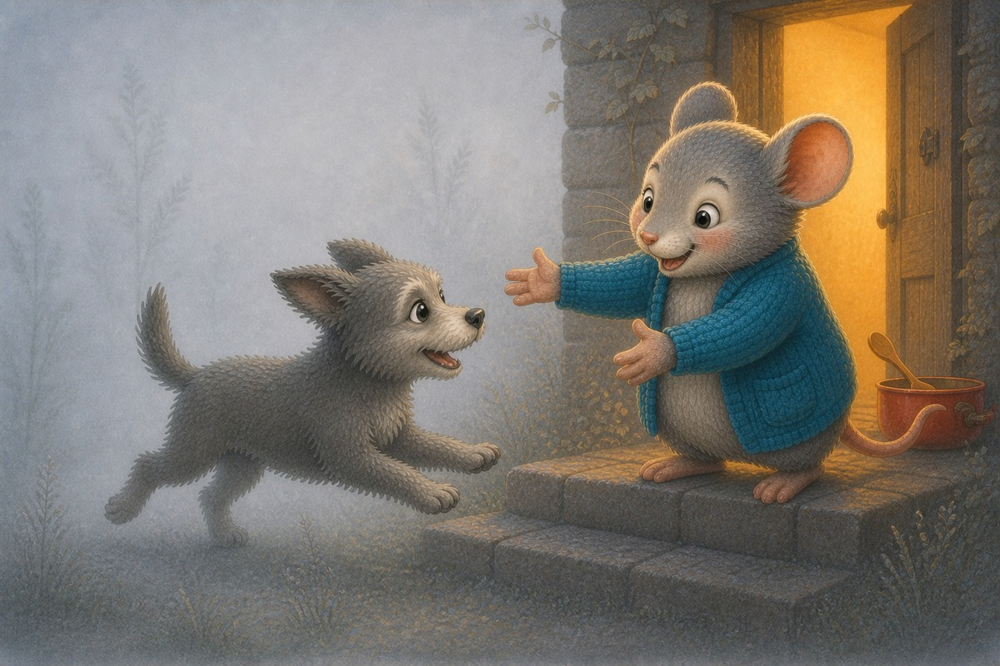
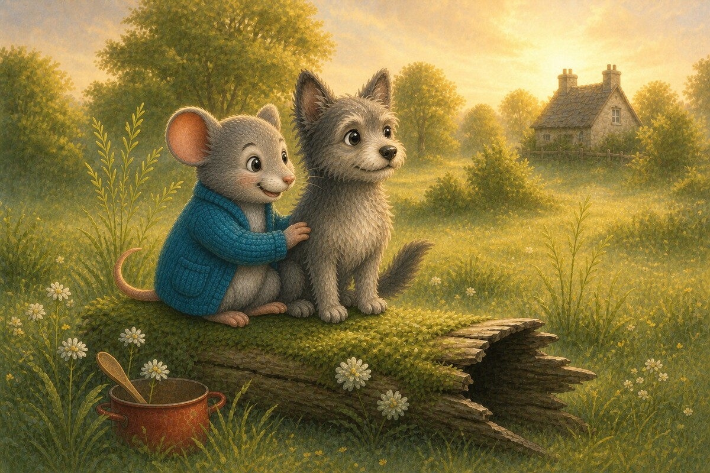

Page 1 of 8
A dog sat on a log.
A 8-page Stage 3 sound practice story. Prepare the declared exceptions together before your reader tries the words.
10 printed pages · 2.0 MB · A4 or US Letter. Download PDF · Open PDF to printOpens in a new tab. Use the PDF viewer's Print control. To use less ink, read online and choose only the questions on page 10 in Print.


A dog sat on a log.

Fog! Fog! The fog is big.

The dog can not spot Nan.

The dog ran in the fog.

Nan hit a hot pot. Bam, bam, bam!

The dog ran to Nan.
The fog is not big. The sun is up.

Nan and the dog sit on the log.
Nan hit a hot pot: bam, bam, bam! Can you sound out p-o-t?
Review the preparation note and word lists above.
SnackPack ABC & Alphabet continues with letter activities, read-together stories and more early phonics practice.
Next Reading Trail practice · read togetherTed‑E‑Bear’s Short‑Vowel Kit
Explore another book · read togetherPolly Roger’s Pirate Cove
Know a family or class who would enjoy it?